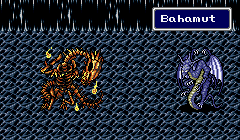
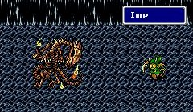

|
Summon
Rydia สามารถ Summon สัตว์อสูรได้ ซึ่งบางตัวต้องต่อสู้ก่อนเพื่อที่จะได้มา
Chocb
MP 7
Chocobo โจมตีศัตรู 1 ตัว สร้างความเสียหายทางด้านกายภาพ
Mist
MP 20
Mist โจมตีศัตรูทุกตัว สร้างความเสียหายแบบไร้ธาตุ
Titan
MP 40
Titan โจมตีศัตรูทุกตัว สร้างความเสียหายธาตุ ดิน (Earth Element)
Shiva
MP 30
Shiva โจมตีศัตรูทุกตัว สร้างความเสียหายธาตุ น้ำแข็ง (Ice Element)
มีความรุนแรงระหว่างเวทย์ Ice2 และ Ice3 คือเท่ากับ Ice2.5
Jinn
MP 30
Jinn โจมตีศัตรูทุกตัว สร้างความเสียหายธาตุ ไฟ (Fire Element)
มีความรุนแรงระหว่างเวทย์ Fire2 และ Fire3 คือเท่ากับ Fire2.5
Indra
MP 30
Indra โจมตีศัตรูทุกตัว สร้างความเสียหายธาตุ สายฟ้า (Thunder Element)
มีความรุนแรงระหว่างเวทย์ Thunder2 และ Thunder3 คือเท่ากับ Thunder2.5
Sylph
MP 25
Sylph จะดูด HP ของศัตรู 1 ตัว มาเพิ่มให้สมาชิกในกลุ่มทุกคน
Asura
MP 50
Asura มีหน้าอยู่ 3 หน้า ซึ่งหากไปหยุดที่หน้าใด ก็จะได้ผลลัพธ์ที่แตกต่างกัน
หากไปหยุดที่หน้าสีเทา จะชุบชีวิตให้กับสมาชิกในกลุ่มทุกคน (ให้ผลเท่ากับ
Life1)
หากไปหยุดที่หน้าสีน้ำตาล จะเพิ่ม HP ให้กับสมาชิกในกลุ่มทุกคน (ให้ผลเท่ากับ
Cure4)
หากไปหยุดที่หน้าสีขาว จะเพิ่ม HP ให้กับสมาชิกในกลุ่มทุกคน (ให้ผลเยอะกว่า
Cure4 มาก)
Levia
MP 50
Leviatan โจมตีศัตรูทุกตัว สร้างความเสียหายธาตุ น้ำ (Water Element)
Odin
MP 45
Odin โจมตีศัตรูทุกตัว ให้ตายภายในครั้งเดียว
Baham

MP 60
Bahamut โจมตีศัตรูทุกตัว สร้างความเสียหายแบบไร้ธาตุ
Rare Summon
นอกจากนี้ยังมีสัตว์อสูรพิเศษอยู่อีก พวกนี้จะได้มาแบบสุ่มหลังจบการต่อสู้
จะได้มาจากศัตรูที่มีรูปร่างแบบเดียวกับพวกมัน
(ดูวิธีได้มาได้ในหน้า Trick)
Imp

MP 1
Imp โจมตีศัตรู 1 ตัว สร้างความเสียหายทางด้านกายภาพ
Bomb
MP 10
Bomb โจมตีศัตรู 1 ตัว สร้างความเสียหายเท่ากับ HP ของผู้เรียกที่มีอยู่ในปัจจุบัน
Mage
MP 18
Mage โจมตีศัตรู 1 ตัว สร้างความเสียหายแบบไร้ธาตุ
Cockt
MP 15
Cocktric โจมตีศัตรู 1 ตัว ทำให้กลายเป็นหิน
* ในภาค Eng จะไม่มีสัตว์อสูรตัวนี้
|